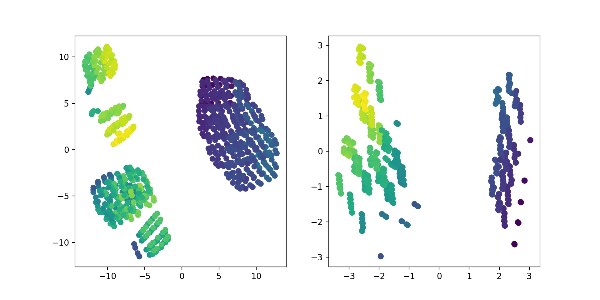
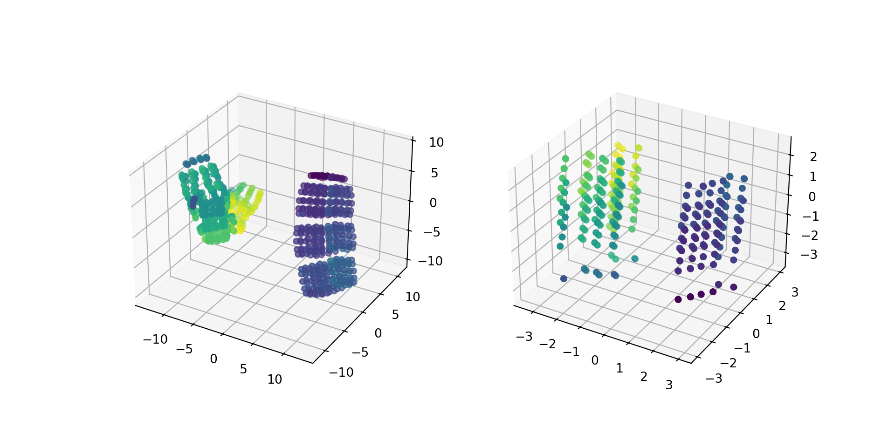
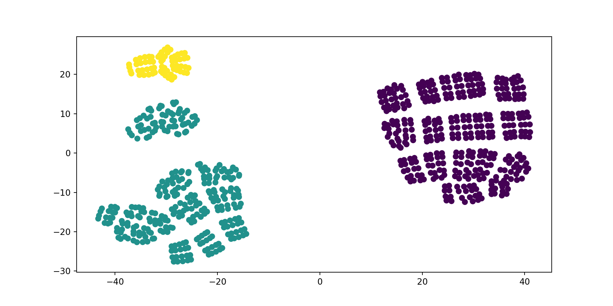
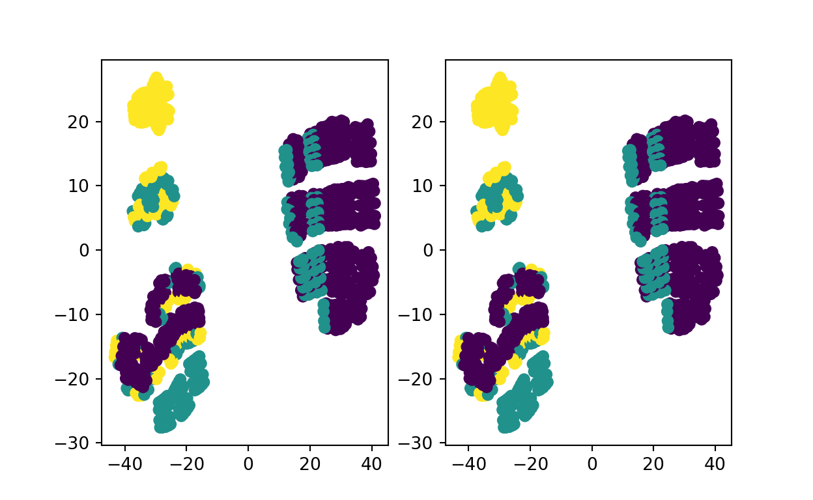

An EM Algorithm project
import pandas as pd
import numpy as np
from sklearn.preprocessing import StandardScalerdata = pd.read_csv('energy-efficiency.csv')
type(data.values)<class 'numpy.ndarray'>data.head() X1 X2 X3 X4 X5 X6 X7 X8 Y1 Y2
0 0.98 514.5 294.0 110.25 7.0 2 0.0 0 15.55 21.33
1 0.98 514.5 294.0 110.25 7.0 3 0.0 0 15.55 21.33
2 0.98 514.5 294.0 110.25 7.0 4 0.0 0 15.55 21.33
3 0.98 514.5 294.0 110.25 7.0 5 0.0 0 15.55 21.33
4 0.90 563.5 318.5 122.50 7.0 2 0.0 0 20.84 28.28data.info()<class 'pandas.core.frame.DataFrame'>
RangeIndex: 768 entries, 0 to 767
Data columns (total 10 columns):
# Column Non-Null Count Dtype
--- ------ -------------- -----
0 X1 768 non-null float64
1 X2 768 non-null float64
2 X3 768 non-null float64
3 X4 768 non-null float64
4 X5 768 non-null float64
5 X6 768 non-null int64
6 X7 768 non-null float64
7 X8 768 non-null int64
8 Y1 768 non-null float64
9 Y2 768 non-null float64
dtypes: float64(8), int64(2)
memory usage: 60.1 KBdata.describe() X1 X2 X3 ... X8 Y1 Y2
count 768.000000 768.000000 768.000000 ... 768.00000 768.000000 768.000000
mean 0.764167 671.708333 318.500000 ... 2.81250 22.307201 24.587760
std 0.105777 88.086116 43.626481 ... 1.55096 10.090196 9.513306
min 0.620000 514.500000 245.000000 ... 0.00000 6.010000 10.900000
25% 0.682500 606.375000 294.000000 ... 1.75000 12.992500 15.620000
50% 0.750000 673.750000 318.500000 ... 3.00000 18.950000 22.080000
75% 0.830000 741.125000 343.000000 ... 4.00000 31.667500 33.132500
max 0.980000 808.500000 416.500000 ... 5.00000 43.100000 48.030000
[8 rows x 10 columns]scaler = StandardScaler().fit(data)scaler.mean_array([7.64166667e-01, 6.71708333e+02, 3.18500000e+02, 1.76604167e+02,
5.25000000e+00, 3.50000000e+00, 2.34375000e-01, 2.81250000e+00,
2.23072005e+01, 2.45877604e+01])scaler.scale_array([ 0.10570859, 88.02874964, 43.59806953, 45.13653573, 1.75 ,
1.11803399, 0.1331338 , 1.5499496 , 10.08362445, 9.50710999])scaled_data = scaler.transform(data)
scaled_dataarray([[ 2.04177671, -1.78587489, -0.56195149, ..., -1.81457514,
-0.67011624, -0.34266569],
[ 2.04177671, -1.78587489, -0.56195149, ..., -1.81457514,
-0.67011624, -0.34266569],
[ 2.04177671, -1.78587489, -0.56195149, ..., -1.81457514,
-0.67011624, -0.34266569],
...,
[-1.36381225, 1.55394308, 1.12390297, ..., 1.41133622,
-0.58185433, -0.78654401],
[-1.36381225, 1.55394308, 1.12390297, ..., 1.41133622,
-0.5778875 , -0.83913623],
[-1.36381225, 1.55394308, 1.12390297, ..., 1.41133622,
-0.56202019, -0.9001432 ]])from sklearn.manifold import TSNE
from sklearn.datasets import load_iris
from sklearn.decomposition import PCA
import matplotlib.pyplot as pltiris = load_iris()
X_tsne = TSNE(n_components=3, learning_rate=100).fit_transform(scaled_data)
X_pca = PCA(n_components=3).fit_transform(scaled_data)
plt.figure(figsize=(10, 5))
plt.subplot(121)
plt.scatter(X_tsne[:, 0], X_tsne[:, 1], c = scaled_data[:,-2])
plt.subplot(122)
plt.scatter(X_pca[:, 0], X_pca[:, 1], c = scaled_data[:, -2])
from mpl_toolkits.mplot3d import Axes3D
X_tsne = TSNE(n_components=3, learning_rate=100).fit_transform(scaled_data)
X_pca = PCA(n_components=3).fit_transform(scaled_data)
fig = plt.figure(figsize=(10, 5))
ax = fig.add_subplot(121, projection='3d')
ax.scatter(X_tsne[:, 0], X_tsne[:, 1], X_tsne[:, 2], c = scaled_data[:,-2])
ax = fig.add_subplot(122, projection='3d')
ax.scatter(X_pca[:, 0], X_pca[:, 1], X_pca[:, 2], c = scaled_data[:,-2])
plt.show()
import matplotlib.pyplot as plt
from sklearn.cluster import KMeans
estimator = KMeans(n_clusters=3)
estimator.fit(data.values)KMeans(n_clusters=3)In a Jupyter environment, please rerun this cell to show the HTML representation or trust the notebook.
labels = estimator.labels_X_tsne = TSNE(n_components=2, learning_rate=100).fit_transform(scaled_data)
plt.figure(figsize=(10, 5))
plt.scatter(X_tsne[:, 0], X_tsne[:, 1], c = labels)
plt.show()
Assuming that the data records in the data set come from different data distributions, the Gaussian Mixture Model can be used to cluster the data set. GMM uses the EM algorithm to determine the parameters of the distribution of each component.
Given \(z\) is a \(K\)-dimensional random latent variable, where \(z_k \in \{0, 1\}\), \(\sum_k z_k = 1\), and the distribution of \(z\) is \(p(z_k = 1) = \pi_k\)
\[p(x) = \sum_{z} p(z)p(x|z)\]
\[= \sum_{k=1}^{K} p(z) \prod_{k=1}^{K} \left(\mathcal{N}(x|\mu_k, \Sigma_k)\right)^{z_k} = \sum_{k=1}^{K} \pi_k \mathcal{N}(x|\mu_k, \Sigma_k)\]
From the formula above, we can see that the GMM model is essentially a linear superposition of K Gaussian models. Furthermore, for clustering problems, we focus on \(p(z_k = 1|x, \theta)\), which is the posterior probability that data point \(x\) belongs to cluster \(k\).
We present the EM framework for parameter estimation in Gaussian Mixture Models:
\[\gamma_n(z_k) = \frac{p(z_k=1)p(x_n|z_k=1)}{p(x_n)} = \frac{p(z_k=1)p(x_n|z_k=1)}{\sum_{j=1}^{K}p(z_j=1)p(x_n|z_j=1)} = \frac{\pi_k \mathcal{N}(x_n|\mu_k,\Sigma_k)}{\sum_{k=1}^{K}\pi_k \mathcal{N}(x|\mu_k)}\]
\[LB(\theta, \theta^{old}) = \mathbb{E}(\log p(x,z|\theta)) = \mathbb{E}\left(\sum_{n=1}^{N} \log p(x_n, z_n|\theta)\right)\]
\[= \sum_{n=1}^{N} \mathbb{E}(\log(p(z_n)p(x_n|z_n))) = \sum_{n=1}^{N} \mathbb{E}\left(\log\left(\prod_{k=1}^{K}(\pi_k p(x_n|\theta_k))^{z_k}\right)\right)\]
\[= \sum_{n}\sum_{k} \mathbb{E}(z_k)\log(\pi_k p(x_n|\theta_k)) = \sum_{n}\sum_{k} \gamma_n(z_k)\log\pi_k + \sum_{n}\sum_{k}\gamma_n(z_k)\log p(x_n|\theta_k)\]
Taking the partial derivatives of the above expression, the closed-form solutions for the parameters are:
\[\pi_k = \frac{1}{N}\sum_{n=1}^{N}\gamma_n(z_k)\]
\[\mu_k = \sum_{n=1}^{N}\frac{\gamma_n(z_k)x_n}{\gamma(z_k)}\]
\[\Sigma_k = \frac{\sum_{n=1}^{N}\gamma_n(z_k)x_n x_n^T}{\gamma(z_k)} - \mu_k\mu_k^T\]
from sklearn.mixture import GaussianMixture
import matplotlib.pyplot as pltgmm_random = GaussianMixture(n_components=3, covariance_type='full', init_params='random').fit(scaled_data)
labels_random = gmm_random.predict(scaled_data)gmm_kmeans = GaussianMixture(n_components=3, covariance_type='full').fit(scaled_data)
labels_kmeans = gmm_random.predict(scaled_data)X_tsne = TSNE(n_components=2, learning_rate=100).fit_transform(scaled_data)
#plt.figure(figsize=(10, 5))
plt.subplot(121)
plt.scatter(X_tsne[:, 0], X_tsne[:, 1], c = labels_random)
plt.subplot(122)
plt.scatter(X_tsne[:, 0], X_tsne[:, 1], c = labels_kmeans)
plt.show()
For attribution, please cite this work as
Wu (2025, May 3). Longxiang Wu: Building Energy Efficiency. Retrieved from https://lunghsiang-wu.github.io/longxiangwu/portfolio/2026-03-20-building/
BibTeX citation
@misc{wu2025building,
author = {Wu, Longxiang},
title = {Longxiang Wu: Building Energy Efficiency},
url = {https://lunghsiang-wu.github.io/longxiangwu/portfolio/2026-03-20-building/},
year = {2025}
}